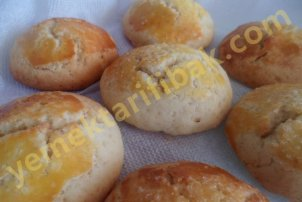

Şekerli Kurabiye
Kullanılan Malzemeler
2 yumurta
Yarım paket margarin
1 su bardağı şeker
1 su bardağı süt
1 su bardağı ayçiçek yağı
Vanilya
Kabartma tozu
Yeteri kadar un
Şekerli Kurabiye Yapılışı

Kullanılan Malzemeler
2 yumurta
Yarım paket margarin
1 su bardağı şeker
1 su bardağı süt
1 su bardağı ayçiçek yağı
Vanilya
Kabartma tozu
Yeteri kadar un
Şekerli Kurabiye Yapılışı
Kullanılan Malzemeler
Yarım paket margarin(oda sıcaklığında)
1 çay bardağı sıvıyağ
1 çay bardağı yoğurt
1 yumurta
1.5 çay bardağı şeker
4-4.5 su bardağı un
1 paket kabartma tozu
1 paket vanilya
iç malzemesi:
3 veya 4 adet elma
1 su bardağı şeker
1 çay bardağı ceviz içi
1 çay kaşığı tarçın
Elmalı Kurabiye Yapılışı
Kullanılan Malzemeler
2 tane yumurta(bir tanesinin beyazı üzeri için ayrılaçak)
Yarım paket margarin(oda sıcaklığında olacak)
1 su bardağı toz şeker
1 çay bardağı sıvıyağ
1 çay bardağı yoğurt
1 paket kabartmatozu
1 paket vanilya
2 su bardağı mısır unu
yeteri kadar un
Mısır Unlu kurabiye Yapılışı
Kullanılan Malzemeler
Yarım paket margarin veya tereyağ(oda sıcaklığında)
1 çay bardağı sıvıyağ
1 çay bardağı şeker
1 yumurta
1 paket kabartma tozu
1 paket vanilya
3 su bardağı un
3 yemek kaşığı kakao
Şerbeti için:
1 su bardağı şeker
1 su bardağı su
Üzeri için:
1 su bardağı kadar hindistan cevizi
Kakaolu Islak Kurabiye Yapılışı
Kullanılan Malzemeler
Yarım paket margarin
1 çay bardağı sıvıyağ
1 yumurta(beyazı üzeri için ayrılacak)
1 fincan yoğurt
1 yemek kaşığı sirke
3 çay kaşığı tuz
1 çay kaşığı şeker
1 paket kabartma tozu
1 çay bardağı haşhaş
Haşhaşlı Tuzlu Kurabiye Yapılışı
Kullanılan Malzemeler
1 adet portakal kabuğu rendesi
1 adet portakalın suyu
2 adet yumurta(1 tanesinin beyazını üzeri için ayır)
1 su bardağı toz şeker
yarım paket margarin
1 paket kabartma tozu
1 paket vanilin
Yeteri kadar un
1 su bardağı fındık veya ceviz
Portakallı Kurabiye Yapılışı
Kullanılan Malzemeler
5 yumurta akı
4 çay bardağı pudra şekeri
bir çimdik tuz
3-4 damla limon suyu
Beze (Köpük) Tarifi Yapılışı
Kullanılan Malzemeler
Malzemeler :
125 Gram margarin
1 Su bardağı şeker
2 Adet yumurta
1 det vanilya
400 Gram nişasta
400 Gram çikolata 1 Kase mısır gevreği
Çikolatalı Mısır Gevrekli Kurabiye Yapılışı
Kullanılan Malzemeler
1 paket oda sıcaklığında eritilmiş margarin
1 yumurta
1 paket vanilya
Yeteri kadar un
1 paket kabartma tozu
4 çay bardağı toz şeker
1 çay bardağı zeytinyağ
Küçük muffin kalıpları
Bonibon
Bonibonlu Kurabiye Yapılışı
Kullanılan Malzemeler
75 gram yumurta akı (bayat)
75 gram toz badem
150 gram pudra şekeri (mümkünse katkısız)
30 gram normal toz şeker
10 gram şekersiz kakao
1 çay kaşığı tuz
Ganaj Kreması İçin:
100 gr sütlü çikolata
100 gram krema
Makaron Tarifi Yapılışı
Kullanılan Malzemeler
2 yumurta(1 tanesinin akı üzeri için ayrılır)
1 su bardağı toz şeker
1 çay bardağı sıvıyağ
1 çay bardağı yoğurt
1 paket margarin
1 paket kabartma tozu
1 paket vanilya
4-5 su bardağı un
Kolay Susamlı Kurabiye Yapılışı
Kullanılan Malzemeler
1 su bardağı tozşeker
1 yumurta(sarısı içine akı dışına)
1 çay bardağı sıvıyağ
1 çay bardağı yoğurt
1 paket margarin
1 paket kabartmatozu
Alabildiği kadar un
Susamlı Kurabiye Yapılışı
Kullanılan Malzemeler
3 adet yumurta beyazı
3 çay bardağı pudra şekeri
3-4 damla limon suyu
1 tutam tuz
Beze (Kaymak) Kurabiye Yapılışı
Kullanılan Malzemeler
250 gr. margarin(oda sıcaklığında)
1 su bardağı pudra şekeri
2 yemek kaşığı kakao
Yarım su bardağı mısır nişastası
1 adet yumurta
1 tatlı kaşığı zencefil
1 paket kabartma tozu
1 şeker kaşığı tarçın
1 paket vanilya
4 su bardağı un
Bir çimdik tuz
Zencefilli Kurabiye Yapılışı